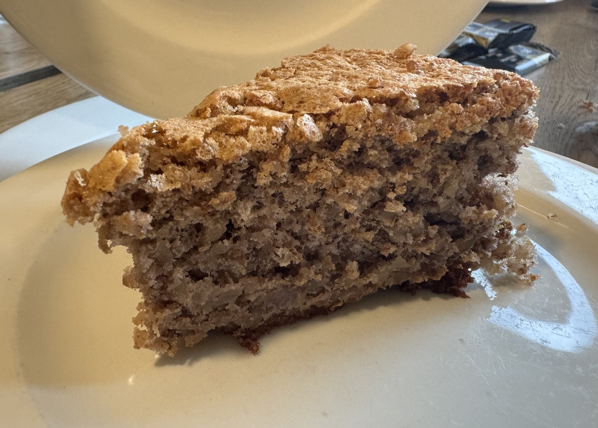
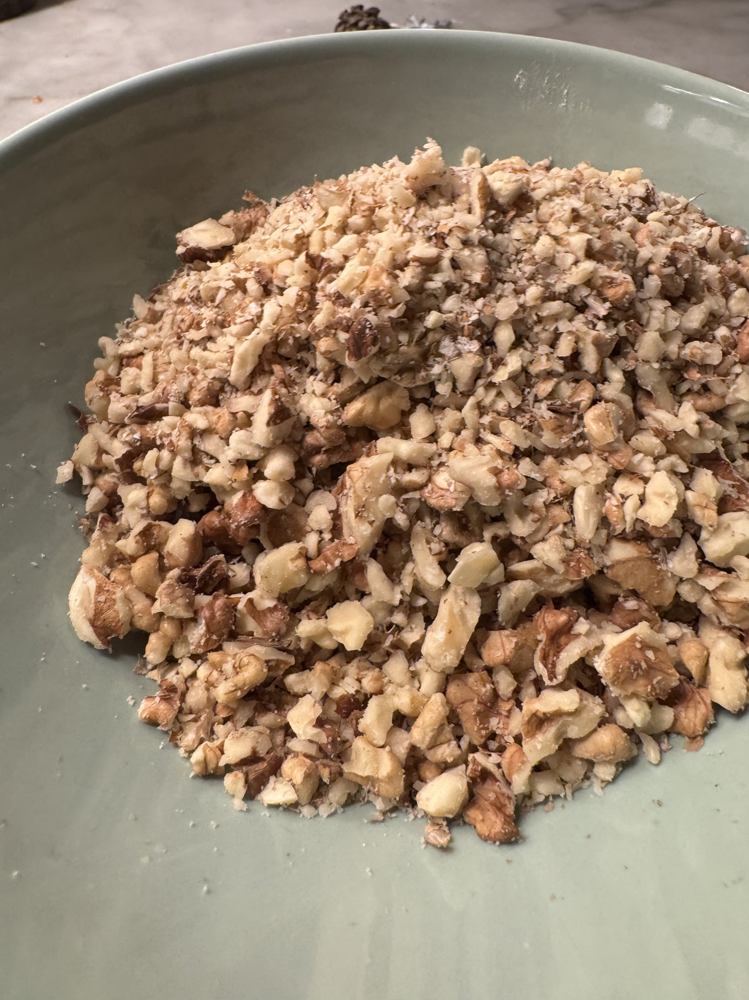
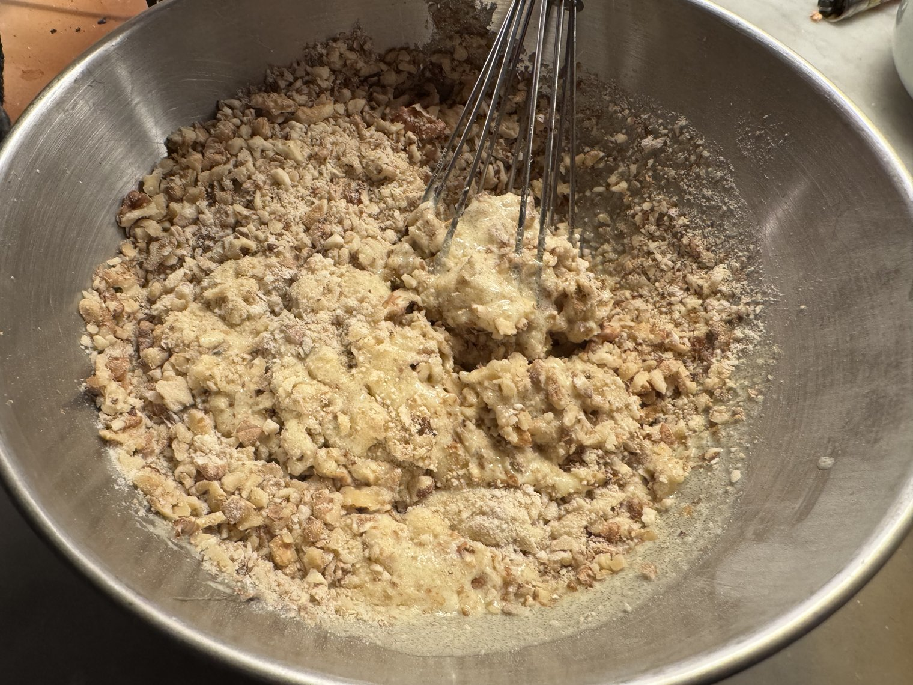
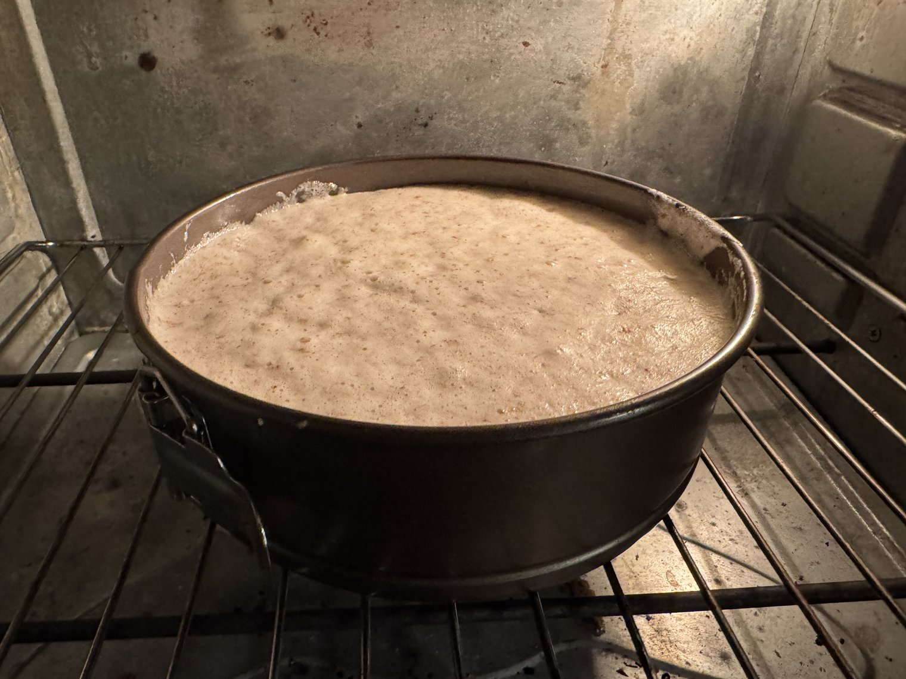
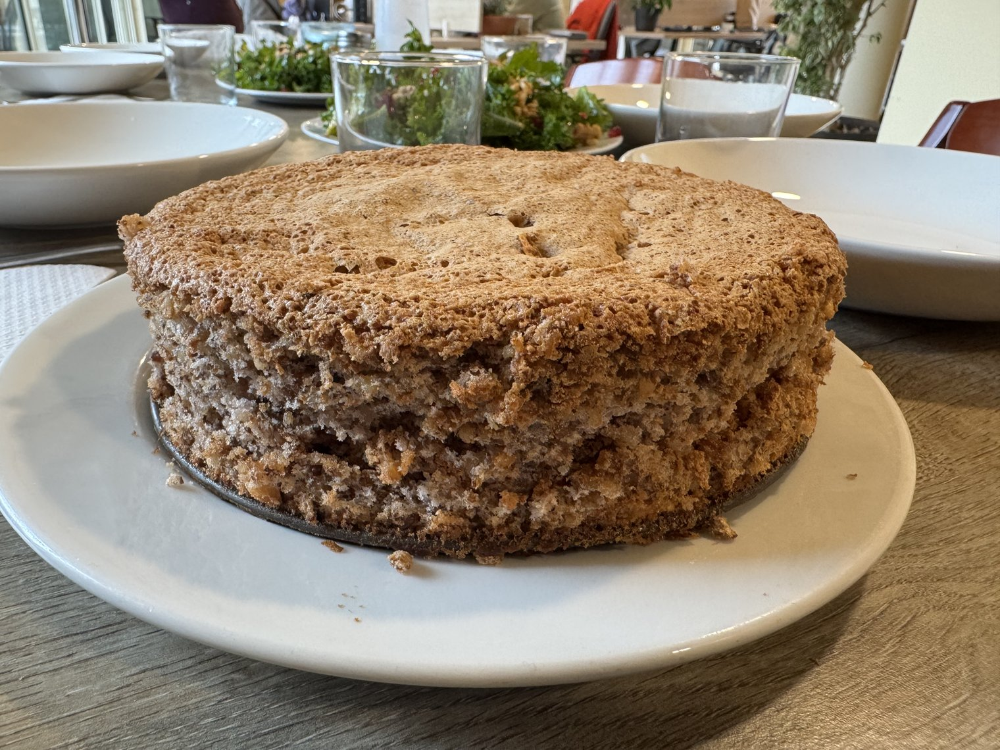

Gâteau aux noix
Ingrédients
8×
- 250 g de noix
- 6 jaunes d'oeuf
- 200 g de sucre
- 50 g de chapelure
- 6 blancs d'oeuf

De Mamie Lucette.
Préparation
Préchauffer le four à 180ºC.
Étape 1
Mixer 250 g de noix.

Étape 2
Battre les 6 jaunes d'oeuf avec 200 g de sucre. Incorporer les noix et 50 g de chapelure.
Étape 3
Incorporer délicatement 6 blancs d'oeuf montés en neige.

Étape 4
Enfourner pendant 30min.

Résumé
250 g de noix
Mixer
6 jaunes d'oeuf
200 g de sucre
50 g de chapelure
Battre Incorporer
6 blancs d'oeuf
Incorporer
Enfourner
